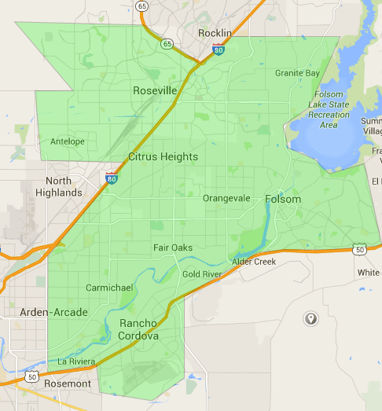

Water leaks
Dripping fittings, leaking pipes, unexpected water or possible burst lines.
LOCAL PLUMBING ENQUIRIES
Leaks, blocked drains, overflowing toilets or hot water trouble in Citrus Heights or nearby? Tell us what’s happening and ask about possible plumbing assistance.
Call (279) 238-8001We are not a plumbing contractor. Provider availability and pricing are not guaranteed.
WHAT CAN YOU CALL ABOUT?
Whether the issue is obvious or you’re not sure what’s wrong, describe it when you call. The categories below are examples of enquiries, not guaranteed contractor services.
Dripping fittings, leaking pipes, unexpected water or possible burst lines.
Slow drainage, blockages, backups and overflowing or faulty toilets.
Loss of hot water, leaking tanks and other water heater questions.
Kitchen sinks, taps, showers, tubs and other residential plumbing concerns.
SIMPLE NEXT STEPS
This website operates as an independent plumbing referral enquiry service. Here’s what to expect.
Explain what’s happening, your general location and any relevant details.
You may be asked to leave a recorded message so your request can be reviewed.
An enquiry may be referred to an independent provider. Connections and service are not assured.
If safe, turn off the relevant water supply. For an immediate danger, contact emergency services or your utility provider rather than relying on this enquiry line.
SACRAMENTO AREA
Our site is oriented towards Citrus Heights and nearby communities, including Roseville, Fair Oaks, Orangevale, Antelope, Carmichael, Folsom and Rancho Cordova.
Mention your city when you call. The places shown do not guarantee referral coverage or contractor availability.
Call about your area
Illustrative area map, not a guarantee of service.
READY TO GET STARTED?
Tell us about the plumbing issue and ask about possible local assistance.